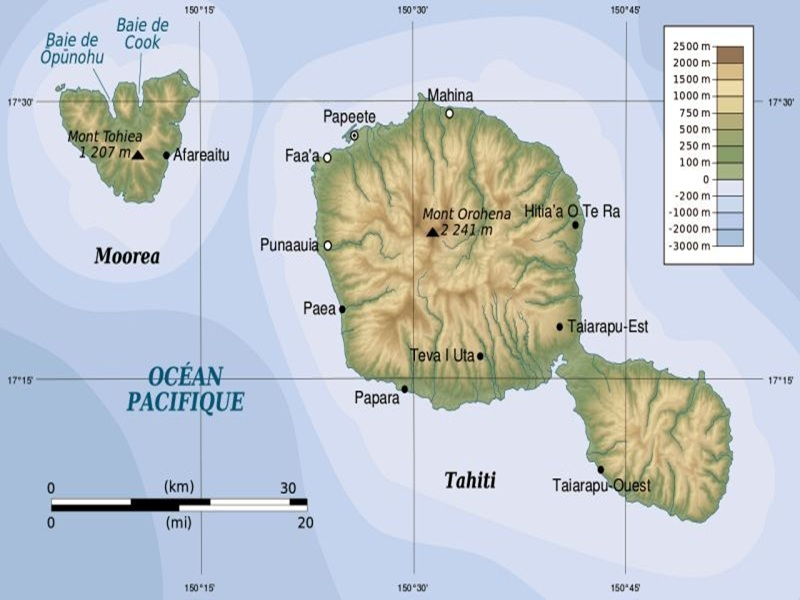

Contact & Frequently Asked Questions
Have a question about visiting Taniti, booking lodging, or planning your activities? Reach out or browse common questions below.

Contact Us
Frequently Asked Questions
Travel & Logistics
-
What power outlets are used?
Taniti uses 120-volt outlets, the same as in the United States. -
What currency is accepted?
US dollars are primary; many places also accept euros and yen. -
Is English widely spoken?
English is commonly spoken in Taniti City, especially in tourist areas.
Alcohol & Safety
-
What is the drinking age?
The legal drinking age is 18 and is lightly enforced. -
Are there restrictions on alcohol sales?
Alcohol is not sold or served between midnight and 9:00 a.m. -
Is Taniti safe for visitors?
Most visits are trouble-free, though there has been a recent increase in petty crime. Visitors are encouraged to use normal travel precautions.
Holidays & Closures
-
Are businesses open on national holidays?
Many attractions and restaurants close on national holidays, so plan ahead if visiting during one.